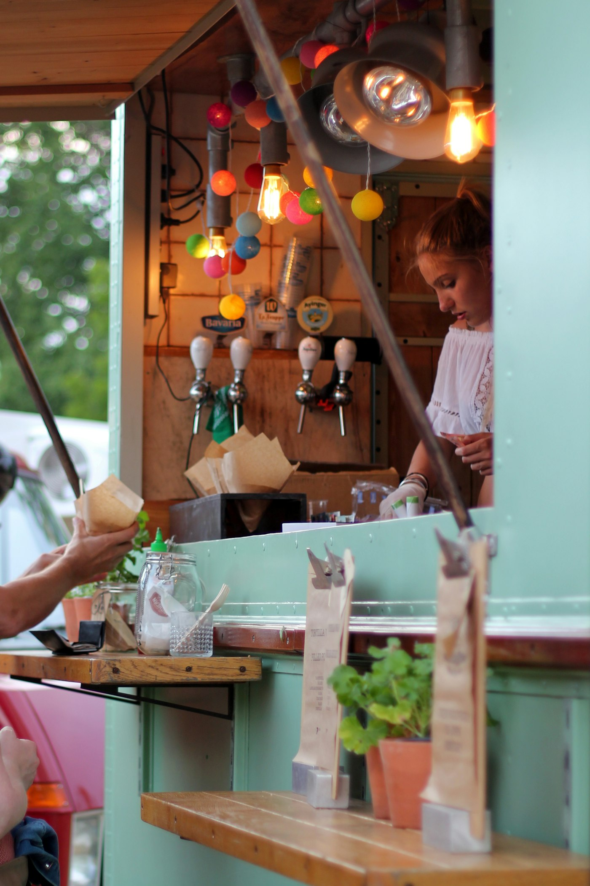

Gastronomic Traditions
The Sacred Craft of Malossol: How Four Decades of Precision Preserve Caspian Caviar

Few culinary emblems command the reverence, mystique, and ceremonial respect accorded to Caspian sturgeon caviar. For over four decades—commencing on the eastern shores of Azerbaijan in 1981—our master curers have maintained an unbroken commitment to Malossol, an ancient Russian culinary term translating literally to “little salt.”
In a modern era dominated by artificial preservatives and shelf-life extenders, authentic Malossol remains an act of sensory bravery. It limits sodium chloride concentration strictly between 2.8% and 3.5% of total egg mass. This delicate restraint ensures that the natural flavor spectrum of the sturgeon roe is never masked by mineral sharpness, allowing the pure buttery notes of clean water and oceanic minerality to blossom on the palate.
The Alchemy of Gentle Salinity
Achieving perfection requires an intimate understanding of egg membrane turgidity. When sturgeon roe is harvested under clinical, temperature-monitored conditions (between 0°C and +4°C), each clutch possesses unique lipid composition dictated by water temperature and the fish’s age.
Our master curers sift the roe across silk-threaded sieves, grading individual pearls for size, color nuance, and membrane elasticity:
- Beluga (Huso huso): Celebrated for immense steely-gray pearls exceeding 3.2mm, boasting a creamy, hazelnut-forward luxury profile.
- Baerii (Acipenser baerii): Darker, anthracite pearls known for immediate iodine crispness and an evocative coastal finish.
- Sevruga (Acipenser stellatus): Smaller, compact beads offering concentrated marine intensity and aromatic persistence.
“Caviar must never be coerced. It must be cradled, salted with surgical reverence, and aged in darkness until the pearls sing in harmony with the sea.”
The Sub-Zero Maturation Protocol
Once salted, the caviar is gently pressed into traditional rubber-band sealed master tins. Here begins the silent maturation phase: resting between -2°C and +2°C for three to six weeks. During this critical interval, mild enzymatic breakdown transforms simple proteins into rich glutamates, imparting that prized umami resonance that Michelin-starred dining rooms demand.

Essential Rules for Tableside Service
To honor the craft invested during decades of aquaculture and curing, we advise our partner establishments to observe three foundational rituals:
- Avoid Metallic Utensils: Silver and stainless steel catalyze lipid oxidation upon contact, instantly imparting a metallic bitterness. Exclusively deploy mother-of-pearl, horn, bone, or gold-plated service spoons.
- Sub-Zero Servicing: Never allow the tin to reach room ambient temperature. Nest the vessel within crushed ice or chilled crystal servers throughout enjoyment.
- Purity of Accompaniments: While crème fraîche, blinis, and chives are classical counterparts, exceptional Beluga Malossol should first be savored unadorned—allowed to melt against the roof of the mouth with warmth from the tongue.
Through our Dubai logistics hub, Caspian & Sun Food Trading LLC maintains direct refrigerated air corridors, ensuring that tins leaving our maturation cellars reach culinary partners across the globe without ever breaking the cold chain. In every pearl lies four decades of pride, patience, and authentic marine luxury.
Caspian Culinary & Marine Council
Comprising veteran marine biologists, aquaculture pioneers, and master curers dedicated to advancing sustainable gastronomy and authentic Caspian caviar traditions worldwide.